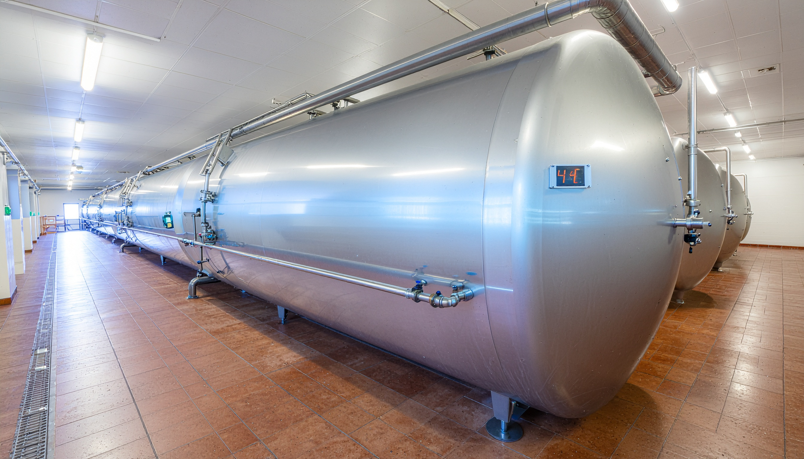
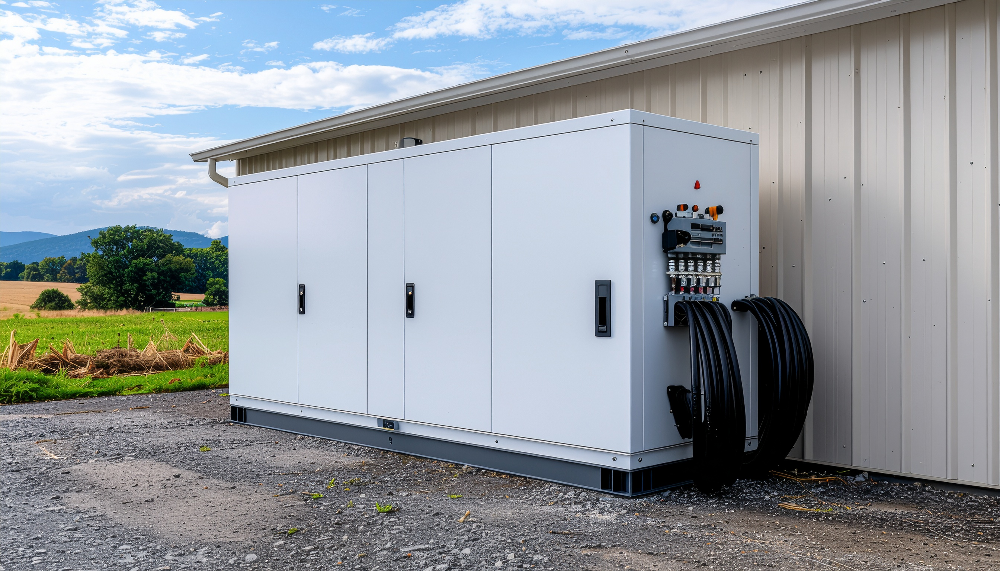
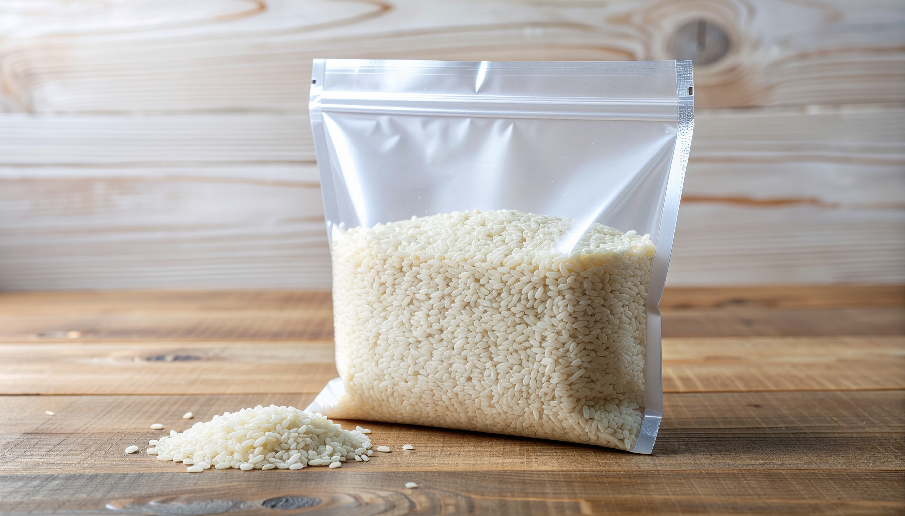

Risco Iminente
Controle Térmico
Aves e suínos sofrem com a falta de climatização. Apagões causam estresse térmico e mortalidade rápida de lotes inteiros.
Proteja sua safra e rebanho dos apagões. Descubra a viabilidade da energia limpa e alcance a autossuficiência no campo paranaense.
As quedas na rede elétrica convencional geram impactos severos e perdas irreparáveis na produção.
Aves e suínos sofrem com a falta de climatização. Apagões causam estresse térmico e mortalidade rápida de lotes inteiros.

A interrupção do resfriamento faz com que tanques inteiros de leite precisem ser descartados por segurança sanitária.

Geradores a diesel salvam a produção, mas possuem custo de operação altíssimo e emitem muitos poluentes.
Tecnologias aliadas à gestão de dados para minimizar perdas e maximizar lucros.

Sensores sem fio alertam sobre umidade e temperatura nos silos em tempo real.

Plataforma adaptável para grãos, hortaliças, laticínios e carnes.

Uso de sacolas herméticas para pequenos produtores protegerem sua colheita.
Descubra o tempo de retorno ao adotar energia solar ou biogás.

Preencha os dados e clique em "Calcular" para gerar seu relatório de impacto financeiro e ambiental.
* Estimativas baseadas em dados médios de investimento, ODS 12.3 e tarifas rurais.